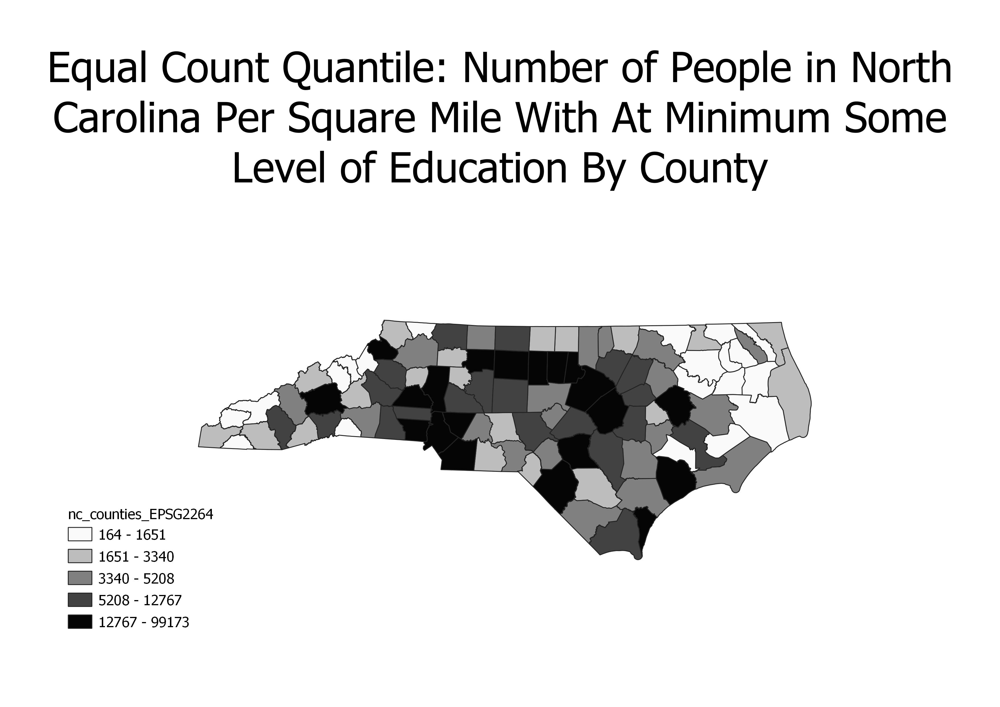
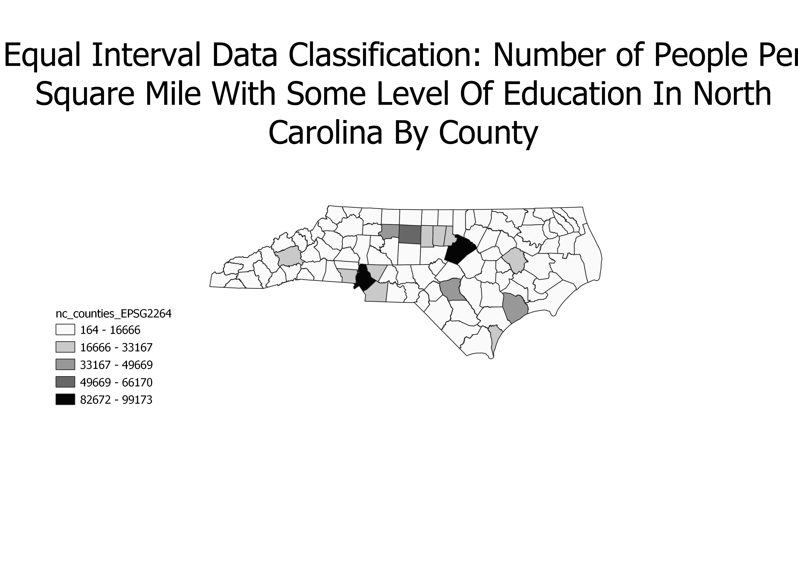
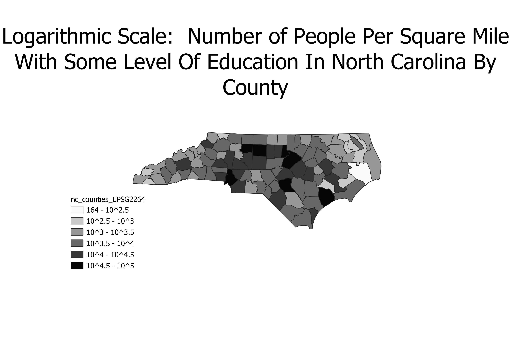

These are chloropleths of North Carolina that displays the number of people per square mile age 18-24 who have achieved at minimum some level of education, starting at "less than a high school diploma," all the way to postdoctorate, by county. The ratios were done by the data-collectors, collecting the number of people in the county with at minimum some level of education through the census.
This here is an equal-count quantile chloropleth. Useful in showing ranks and ordinal data, it splits up "classes" so the total number of features or data in each class is approximately the same. Useful when there's a clear ordering or ranking of variables, or putting data into categories that are "high" or "low," it's useful, but it's rather deceptive in regards to granularity. What may be "large" or "small" is rather arbitrary when trying to make everything equally divided.
This here is an equal-interval chloropleth. It's useful when data is generally spread across the entire range, because it divdes the data into euqal class sizes, so it really dives into the granularity. However, if it's skewed or has significantly large outliers, it will produce empty classes because some classes will have no observations in them.
This here is a logarithmic scale chloropleth. It's a nonlinear scale, but it suffices to display a very, very large range of values in a more compact or compressed ways--especially when the largest values can be hundreds or thousands of times larger than the smallest values. However, when there isn't that large of a differential, it would generally be better to be used in different formats, and even with larger scales it can be seemingly deceptive without a proper legend next to it.